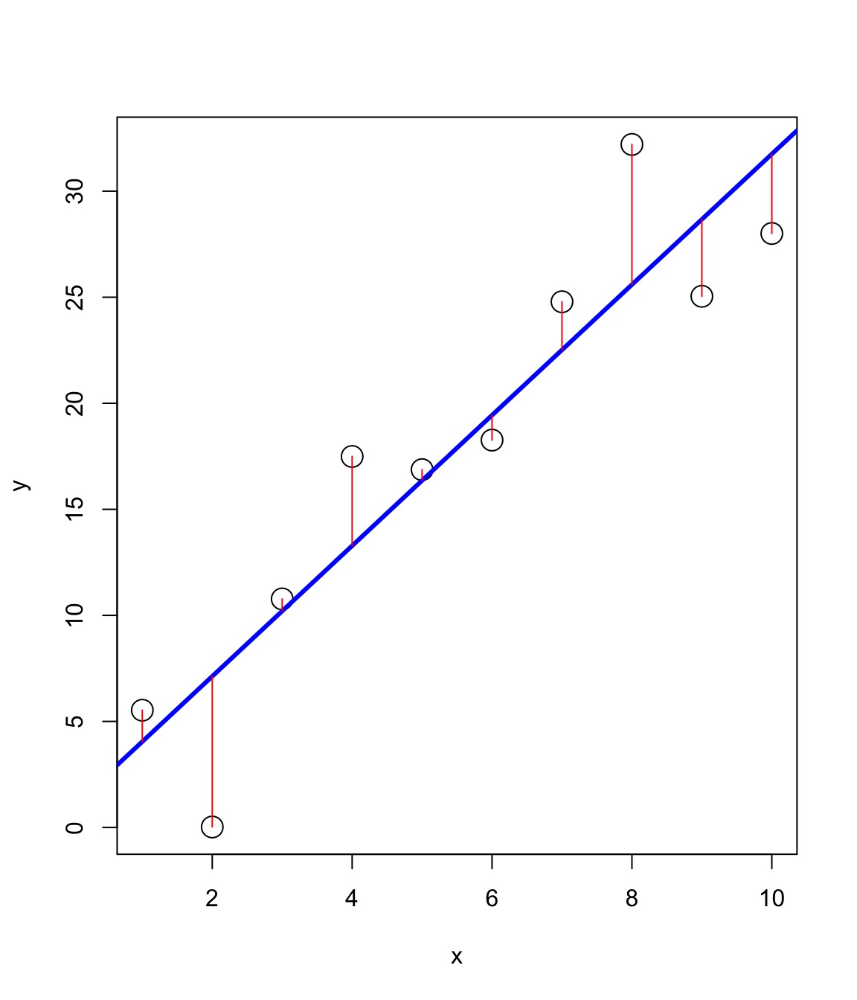
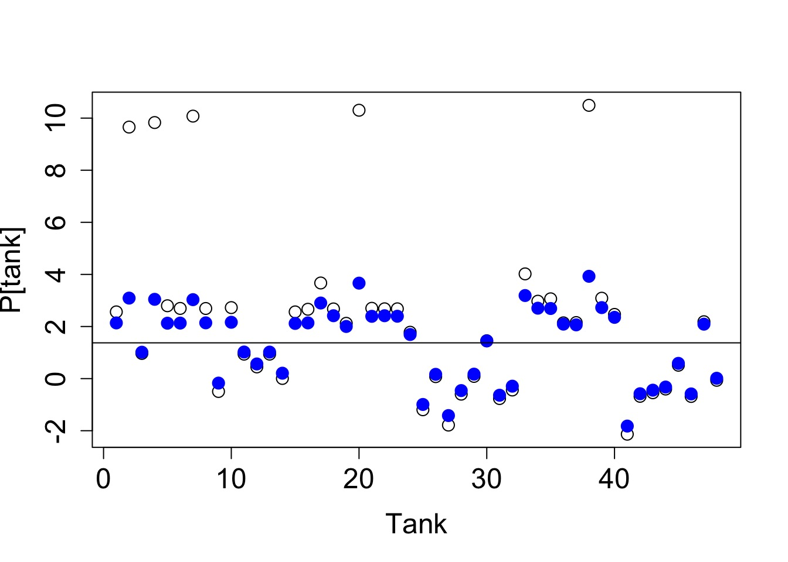
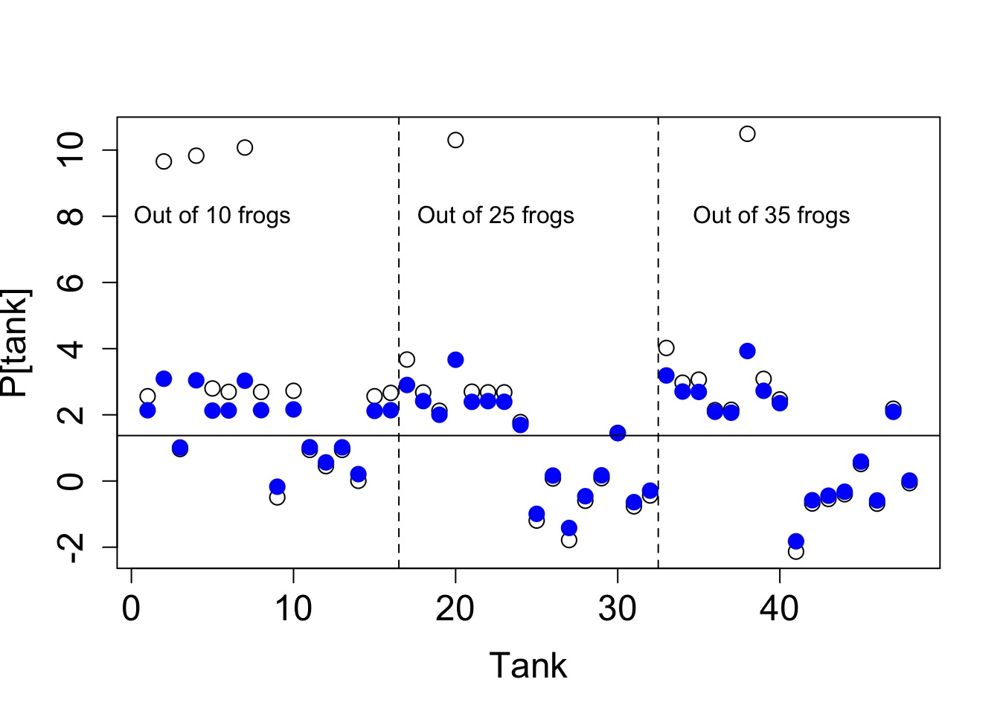
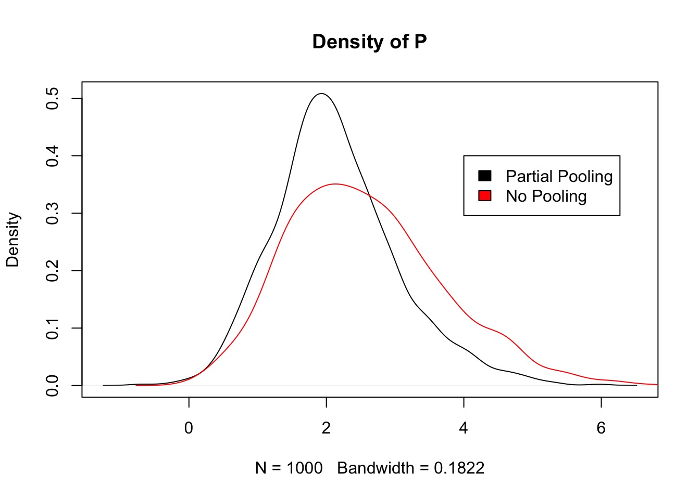
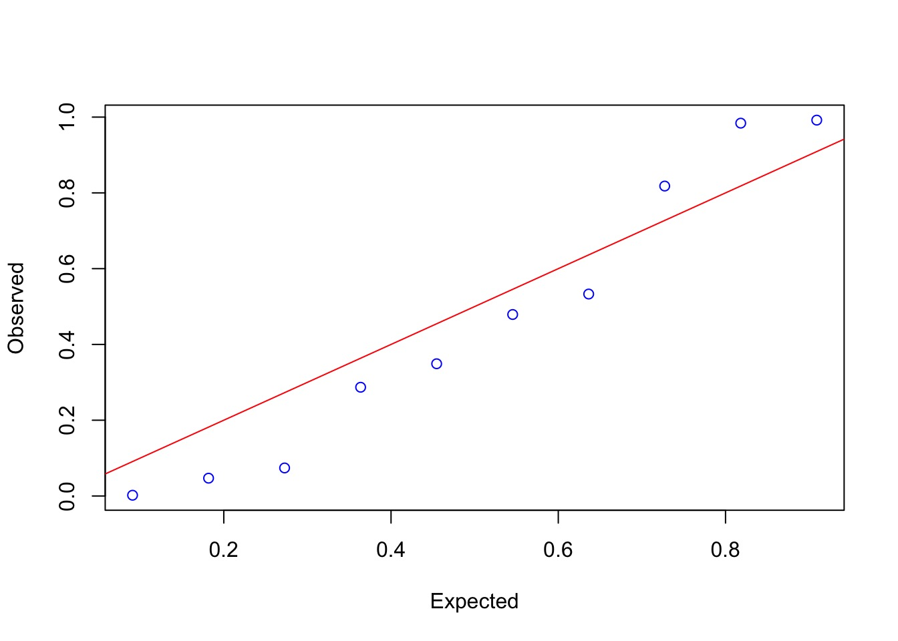
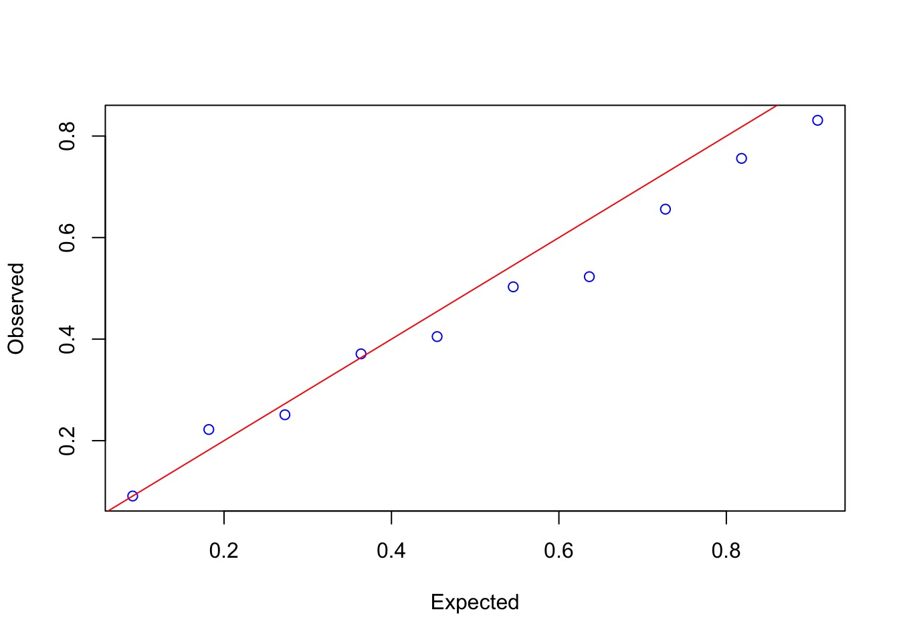
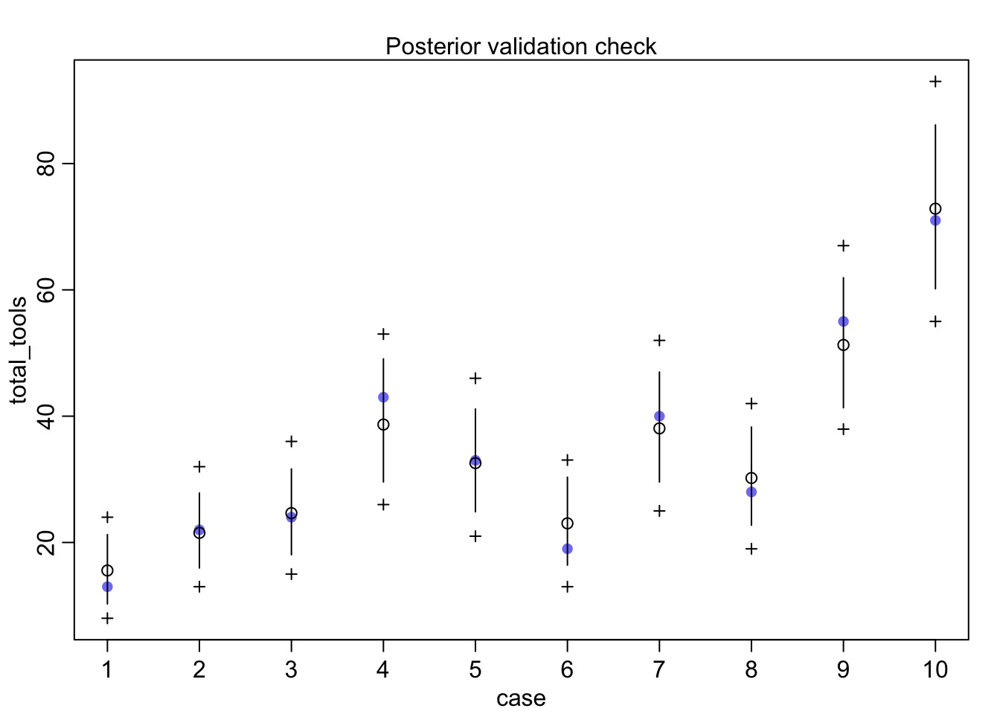

Bayesian Approaches to Mixed (aka Hierarchical, aka Multilevel) Models

Mixed Models
- We have used these to tease out variation in parameters due to “blocks”
- Many kinds of “blocks”
- Variation can affect slopes and intercepts
- Variation can come from continuous “blocks” - Gaussian Process Models
- But what do we gain?
Gains from a Mixed Model Approach
- Shrinkage of Estimators
- Accurate post-hoc comparisons
- Better ability to make focused predictions
The Incredible Shrinking Frogs
The Reed Frog Data
density pred size surv propsurv
1 10 no big 9 0.9
2 10 no big 10 1.0
3 10 no big 7 0.7
4 10 no big 10 1.0
5 10 no small 9 0.9
6 10 no small 9 0.9Tank as a block
- 48 tanks
- Each tank has different number of frogs
- Each frog is a “replicate”
- 1/0 live/die
- 1/0 live/die
- Each tank is a “block”
Three ways of looking at survivorship
1. Every tank has the same survivorship (complete pooling)
2. Every tank has its own unique survivorship (no pooling)
3. Every tank is similar to others, but with some variation in survivorship (partial pooling)
Complete Pooling
mod_fullpool <- alist(
#likelihood
surv ~ dbinom(density, prob),
#Data Generating Process
logit(prob) <- p,
#Priors
p ~ dnorm(0,10)
)
fit_fullpool <- map2stan(mod_fullpool, data=reedfrogs)
Estimates mean probability across all tanks
No Pooling
mod_nopool <- alist(
#likelihood
surv ~ dbinom(density, prob),
#Data Generating Process
logit(prob) <- p[tank],
#Priors
p[tank] ~ dnorm(0,10)
)
fit_nopool <- map2stan(mod_nopool, data=reedfrogs)Each tank is independent
Partial Pooling and Hyperparameters
p[tank] ~ dnorm(0,10)
P[tank] can be anything, and our prior for
p[tank] shows a distribution of possible values
But now…
p[tank] ~ dnorm(p_hat, sigma_tank)
P[tank] is drawn from a distribution, and
p_hat and sigma_tank are hyperparameters, each with their own prior
This can go on forever…

Partial Pooling
mod_partialpool <- alist(
#likelihood
surv ~ dbinom(density, prob),
#DGP
logit(prob) <- p[tank],
#Define random effects (part of DGP!)
p[tank] ~ dnorm(p_hat, sigma_tank),
#Priors
p_hat ~ dnorm(0,10),
sigma_tank ~ dcauchy(0,2)
)
fit <- map2stan(mod_partialpool, data=reedfrogs)
\[p_j \sim dnorm(\widehat{p} , \sigma_{tank})\]
The Mathy Version
Likelihood
\(Survivors_j \sim dbinom(density_j , prob_j)\)
Data Generating Process
\(logit(prob_j) = p_j\)
\(p_j \sim dnorm(\widehat{p} , \sigma_{tank})\)
Priors
\(\widehat{p} \sim dnorm(0,10)\)
\(\sigma_{tank} \sim dcauchy(0,2)\)
Why Partial Pooling?
- Share information across blocks
- estimate of one block informs the other
- super helpful with unbalanced designs
- Enables Best Least Unbiased Predictor (BLUP) of observations
- estimate of one block informs the other
- Reduces number of effective parameters
- Improved estimation of true underlying parameter
- Observed values have additional error, reduces accuracy
- Observed values have additional error, reduces accuracy
Sharing Information for Estimation
- We already do this with regression
- Regression model fits a line and generates predictions
- Values in one data point inform estimates of another data point
- Predictions are akin to BLUPs
- Estimation of points shrinks to a regression line

Shrinkage in Frog Survivorship

Shrinkage and Unbalanced Designs

Partial Pooling Better for Unbalanced Designs

Comparing Approaches
WAIC pWAIC dWAIC weight SE dSE
fit 1011.1 38.5 0.0 1 38.15 NA
fit_nopool 1027.7 52.4 16.6 0 44.40 8.58
fit_fullpool 1372.0 1.0 360.9 0 25.87 35.12- Improved fit from partial pooling
- Big reduction in number of parameters
- From reducing paramter variance (remember pWAIC definition!)
Reduced Parameter Variance

Fit and Overdispersion
- Overdispersed models are kinda mixed models already
- Parameters of distribution vary with their own distribution
- We use a formal compound distribution, but the concept is the same
- Mixed models have coefficients vary by distribution
- Variation injected earlier, but similar effect
Oceanic Tool Use

culture population contact total_tools mean_TU
1 Malekula 1100 low 13 3.2
2 Tikopia 1500 low 22 4.7
3 Santa Cruz 3600 low 24 4.0
4 Yap 4791 high 43 5.0
5 Lau Fiji 7400 high 33 5.0
6 Trobriand 8000 high 19 4.0A Typical Model
Overdispersion?

Mild, but yes.
An Overdispersed Model
Overdispersion needed
Mean StdDev lower 0.89 upper 0.89 n_eff Rhat
a 0.98 1.57 -1.58 3.22 291 1.00
bp 0.28 0.17 0.01 0.54 297 1.00
scale 2.22 0.94 0.86 3.57 356 1.01Overdispersion helps

What about modeling random variation in societies?
Kline$society <- 1:nrow(Kline)
kline_mixed <- alist(
#Likelihood
total_tools ~ dpois(lambda),
#DGP
log(lambda) ~ a[society] + bp*log_pop,
a[society] ~ dnorm(a_hat, sigma_society),
#Priors
a_hat ~ dnorm(0,10),
bp ~ dnorm(0,1),
sigma_society ~ dcauchy(0,2)
)
kline_mixed_fit <- map2stan(kline_mixed, data=Kline,
iter=10000, chains=3)Overdispersion Handled Here, Too

Exercise
- Revisit the Reed Frog survivorship
- Fit models with 1) predation and frog size acting additively, 2) both interacting, and 3) a null model.
- All should have tank as a random effect.
- All should have tank as a random effect.
- Feel free to try with
lme4first just to get your bearings
- Compare all three with WAIC
- How does
sigma_tankchange across the different models?